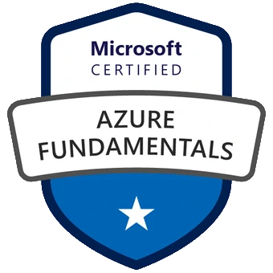
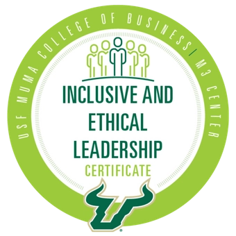

Erissa Renée Duvall
formerly Elizabeth Ann Gray
formerly Elizabeth Ann Gray
Earners of the Diversity, Equity and Inclusion in the Workplace Certificate, offered by the University of South Florida Muma College of Business, have learned the essential practices and tools designed to increase employee diversity and to create a business model that embraces equity and inclusion. The seven-week program, created in partnership with the Tampa Bay Lightning and Jabil, focuses on ways for organizations to create diverse workplaces, address equity issues, and foster inclusivity.
Earners of the Inclusive and Ethical Leadership Certificate, offered by the University of South Florida Muma College of Business M3 Center, have gained awareness of cutting-edge research and best practices for inclusive and ethical leadership. The certificate program was divided into eight sections: Leadership Basics, Communication, Conflict Management, Ethical Leadership / Decision Making, Diversity, Equity, and Inclusion, Innovation, Work/Family Life Balance and Self-Development.
PowerPoints from presentations listed below are stored in my A11y-Materials GitHub repository.
| Certification Title | Date Issued | Issued By | Expiration Date | Verification Information | Badge or Icon |
|---|---|---|---|---|---|
| Accessibility in Action Badge | April 27th, 2020 | Microsoft Accesibility | Not Applicable | Verify Accessibility in Action on Credly |  |
| Trusted Tester | July 8th, 2020 | Department of Homeland Security Office of Accessible Systems & Technology | Not Applicable | Trusted Tester Certification Number: TT-2007-01048 |  |
| AZ-900: Azure Fundamentals Certification | June 20th, 2021 | Microsoft | June 20th, 2023 | Verify AZ-900 Certification on Credly |  |
| Diveristy, Equity, and Inclusion in the Workplace Certificate | May 5th, 2021 | University of South Florida Muma College of Business | Not Applicable | Verify Diversity, Equity, and Inclusion certificate on Credly | |
| Inclusive and Ethical Leadership Certificate | November 15th, 2021 | University of South Florida Muma College of Business | Not Applicable | Verify Inclusive and Ethical Leadership Certificate on Credly |  |
| WAI0.1x: Introduction to Web Accessibility | January 3rd, 2022 | W3Cx | Not Applicable | Verify Introduction to Web Accessibility certificate on edX | No badge available |